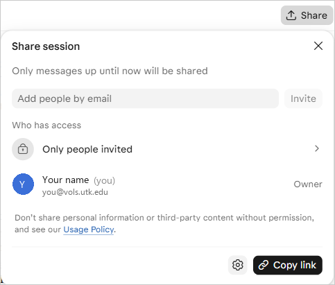
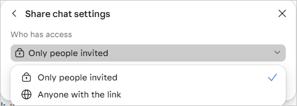
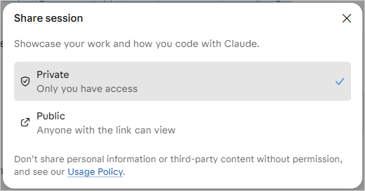
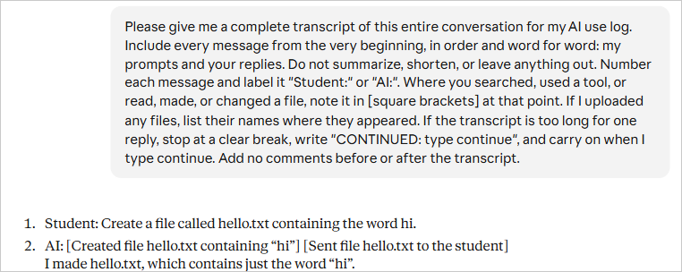

Getting More from Claude Code for Your DH Project
You already have Claude Code, Superpowers and Playwright. This guide shows a handful of built-in features that make them work better on a digital humanities project, plus one required step: installing the AI Use Log so you can submit a record of your Claude conversations with your project.
| Feature | What it does for you | Required? |
|---|---|---|
| AI Use Log | Saves every Claude Code conversation in your project | Required if you use Claude Code |
CLAUDE.md (/init) | Gives Claude standing instructions about your project | Recommended |
| Plan mode | Claude proposes a plan before touching files | Recommended |
| Rewind | Undoes Claude's changes back to an earlier point | Recommended |
| Superpowers | Brainstorm, plan, build and check, in that order | Already installed |
| Playwright | Claude opens your project in a real browser and checks it | Already installed |
| Your own skills, MCP, hooks | Teach Claude your methods; connect it to other tools | Optional |
1. Required: the AI Use Log
If you use Claude Code on your project, you submit its conversations with your project. The AI Use Log plugin saves them for you automatically, so you never have to remember.
Install it (once, about two minutes)
- Open Claude Code in any folder.
- Type this and press Enter:
/plugin marketplace add hilaryhavens/ai-use-log - Type this and press Enter. If it asks where to install, choose the option for your user account (all your projects).
/plugin install ai-use-log@ai-use-log - Quit Claude Code and start it again in your project folder.
- Ask Claude anything. When it replies, an
ai-logfolder appears in your project with a file calledAI-Use-Log.htmlinside. If it does, you're done.
What gets saved
After every reply Claude gives, the plugin copies the whole conversation into ai-log: one .jsonl file per session, named with the date. A folder with the same name holds the work of any Superpowers helper agents. The log includes your prompts, Claude's replies, every file Claude read or changed, the commands it ran, the skills it used, and its Playwright browser actions.
It also rebuilds AI-Use-Log.html, one readable page with every session in it. Double-click it to read your log in your browser; nothing is uploaded. You can also open the AI Use Log Viewer and choose your ai-log folder.
How to submit
- Upload
ai-log/AI-Use-Log.htmlto the Canvas assignment along with your project. That one file is your whole log: there's nothing to zip. - Can't find it? Type
/ai-use-log:submitin Claude Code. It opens theai-logfolder with the file selected.
Submit all of it, including sessions that went nowhere: they show your process.
Privacy
- The log holds everything Claude saw, including whatever you paste in. Don't paste passwords or other people's personal information.
- If your project is in a public GitHub repository, pushing
ai-logpublishes your conversations. To avoid that, add a line readingai-log/to your project's.gitignorefile, and submit through Canvas instead.
Limits
- It records only sessions started after you install it, in the folder you started Claude Code in.
- It works only in Claude Code on your own computer (terminal, desktop app or VS Code). Using Claude Cowork, Claude on the web or the UT AI Hub? See the next section.
- The files are the original records, but they are ordinary files: they are a record of your work, not a lock on it.
Using Cowork, Claude on the web or the UT AI Hub instead?
The AI Use Log can't run in these tools, so you submit a share link or a transcript instead. Do it when you've finished working, and submit one for every conversation you used on the project.
Claude Cowork: share the session
- Open the Cowork session and click Share at the top right. Only the messages up to now are shared, so do this last. If you keep working afterward, share it again.
- Under Who has access, click Only people invited, choose Anyone with the link, and click Save.
- Click Copy link and paste the link into the Canvas assignment.


Claude Code on the web: share the session
- Open the session at claude.ai/code and click the Share icon at the top right (an arrow pointing up out of a box).
- Choose Public.
- Copy the session's address from your browser's address bar and paste it into the Canvas assignment.

Anyone who has a share link can read the whole conversation, so check that nothing private is in it. Don't delete the session until your grade is posted, or the link stops working.
UT AI Hub: ask for a transcript
When you've finished, paste this prompt into the same conversation:
Please give me a complete transcript of this entire conversation for my AI use log. Include every message from the very beginning, in order and word for word: my prompts and your replies. Do not summarize, shorten, or leave anything out. Number each message (1, 2, 3 and so on) and label it "Student:" or "AI:". Where you searched, used a tool, or read, made, or changed a file, note it in [square brackets] at that point. If I uploaded any files, list their names where they appeared. If the transcript is too long for one reply, stop at a clear break, write "CONTINUED: type continue", and carry on when I type continue. Add no comments before or after the transcript.- If the reply ends with "CONTINUED: type continue", type
continueuntil the transcript is finished. - Check it against the conversation: it should start with your first message and leave nothing out. AI can skip things, so ask again for anything missing.
- Copy the transcript into a Word or Google document, save it, and upload it to the Canvas assignment.

The same prompt works in Cowork or Claude on the web if you'd rather submit a document than a link.
2. Habits for every project
These five habits take a minute each and save the most frustration. Always start Claude Code inside your project folder, so it (and the AI Use Log) works on the right files.
Give Claude standing instructions: CLAUDE.md
Type /init in a new project. Claude reads your files and writes a CLAUDE.md file describing the project. Claude reads that file at the start of every session, so you stop re-explaining your project.
Open CLAUDE.md and add what Claude should always know, for example:
- "This is a Twine (SugarCube) story; keep passage names unchanged."
- "We encode with TEI P5 and follow the tagging rules in
guidelines.md." - "Quote only from the 1813 first edition in
sources/."
Think before building: plan mode
Press Shift+Tab until the bottom of the screen says plan mode. Claude can read your files but not change them, and it answers with a plan. Read the plan, push back, and approve it only when it matches what you want. This is the best moment to explain your project's purpose in your own words.
Plan mode or auto mode? Both are on the same Shift+Tab cycle, but they do opposite jobs.
| Plan mode | Auto mode | |
|---|---|---|
| What Claude does | Reads and proposes a plan; changes nothing | Carries out the work without asking before each edit or command |
| Your role | Read, push back, approve | Watch the results; a built-in safety check blocks risky actions |
| Use it when | Starting anything new or unclear | You've approved a plan and want Claude to work through it |
In the default mode, Claude asks before each change. Auto mode may not appear on the Shift+Tab cycle in every setup. Whichever mode you use, rewind (below) is your undo.
Undo safely: rewind
Press Esc twice (or type /rewind) to see your earlier messages. Pick one to roll the conversation, your files, or both back to that point. Experiment freely: a bad idea costs you a few seconds.
Ask Claude to explain as it goes
Say "explain your choices as you go" or "leave the last step for me to write" when you want to understand the code, not just receive it. Your Claude Code version may also offer Explanatory or Learning output styles under /config, which do this automatically.
Pick up where you left off
/resumereopens an earlier conversation from a list./compactshrinks a long conversation when Claude slows down or starts forgetting things; add a note on what to keep, such as/compact keep the encoding decisions./clearstarts fresh when you switch to an unrelated task.
3. Working with Superpowers and Playwright
Superpowers gives Claude a disciplined way to build; Playwright lets Claude look at what it built. Used together with the habits above, they turn "make me a website" into a project you can explain and defend.
A Superpowers project, start to finish
- Brainstorm. Start with "Use superpowers to help me plan…" and describe your goal. Claude asks you questions one at a time, about purpose and audience before technology. Answer in your own words: this is your argument, not Claude's.
- Approve a design. Claude writes a short design document. Read it the way you'd read a peer's proposal, and correct anything that isn't what you meant.
- Plan. Claude breaks the work into small tasks, each with a way to check it worked.
- Build. Claude works through the plan. Superpowers may send out helper agents for parts of the job; the AI Use Log records their work too.
- Verify. Superpowers makes Claude show evidence (a test passing, a page loading) before it says something is done. If Claude says "it should work," ask it to prove it.
Plan mode and Superpowers do similar things: use plan mode for a quick change, and Superpowers for anything that takes more than one sitting.
Let Claude check its own work with Playwright
Playwright opens a real browser that Claude controls. Ask for it by name, for example:
- "Use Playwright to open my site and click through every link. List anything broken."
- "Use Playwright to check my pages at phone width and take screenshots."
- "Use Playwright to play through my story and tell me which passages can't be reached."
Look at the screenshots yourself: Claude's report is a starting point, not the final word. Playwright's actions appear in your AI Use Log, so your instructor can see what was checked.
4. Going further (optional)
These are for teams that want Claude to follow their own methods or reach other tools.
- Write your own skill. A skill is a short instruction file Claude follows whenever it fits, just as it follows the Superpowers skills. Capture your team's conventions (tagging rules, house style, citation format) in one, so every teammate's Claude works the same way. Ask: "Help me write a skill that captures our project's encoding conventions." Writing it also makes you spell out your method, which is good scholarship in itself.
- Connect other tools with MCP. MCP servers connect Claude to outside sources, such as a Zotero library, a text corpus or a database, so it works from your real materials instead of memory. Ask your instructor before connecting anything that holds other people's data.
- Automate checks with hooks. A hook runs a command automatically at set moments, for example checking your XML every time Claude edits a file. The AI Use Log in section 1 is itself a hook. Hooks are the most technical item here: start with the others.
5. Check every quotation, citation and fact
Claude can produce quotations, page numbers, citations and historical "facts" that sound right and are wrong. In humanities work that is the most serious way it can fail you, so the rule is simple: you check every quotation and citation against the source before it goes into your project.
- Give Claude the source text (a file in your project, or a page Claude can open) and tell it to quote only from that, for example in your
CLAUDE.md. - Ask Claude where each quotation comes from, then open that edition and find it yourself.
- Treat anything Claude reads from an image (a scan, a manuscript page, a photo) as a draft transcription to proofread.
- When Claude says it checked something, ask how. With Superpowers, it should show you the evidence.
Quick reference
| Type or press | What happens |
|---|---|
/init | Claude writes a CLAUDE.md describing your project |
| Shift+Tab | Switches modes; stop on plan mode to get a plan first |
Esc, Esc (or /rewind) | Roll back the conversation and/or your files |
/resume | Reopen an earlier conversation |
/compact | Shrink a long conversation |
/clear | Start a fresh conversation |
/plugin | See, install or remove plugins |
Troubleshooting
- No
ai-logfolder after Claude replies. Check that you restarted Claude Code after installing, and that you started it inside your project folder. Type/pluginand confirm ai-use-log is listed and enabled. - The
ai-logfolder is somewhere unexpected. It goes in whatever folder you started Claude Code in. Move the files into your project'sai-logfolder and start Claude Code from the project folder next time. /plugin marketplace addfails. Check your internet connection, and that you typedhilaryhavens/ai-use-logexactly.- On Windows, nothing is saved at all. The plugin uses Git Bash, which Claude Code needs anyway. If Git for Windows was removed, reinstall it from git-scm.com.